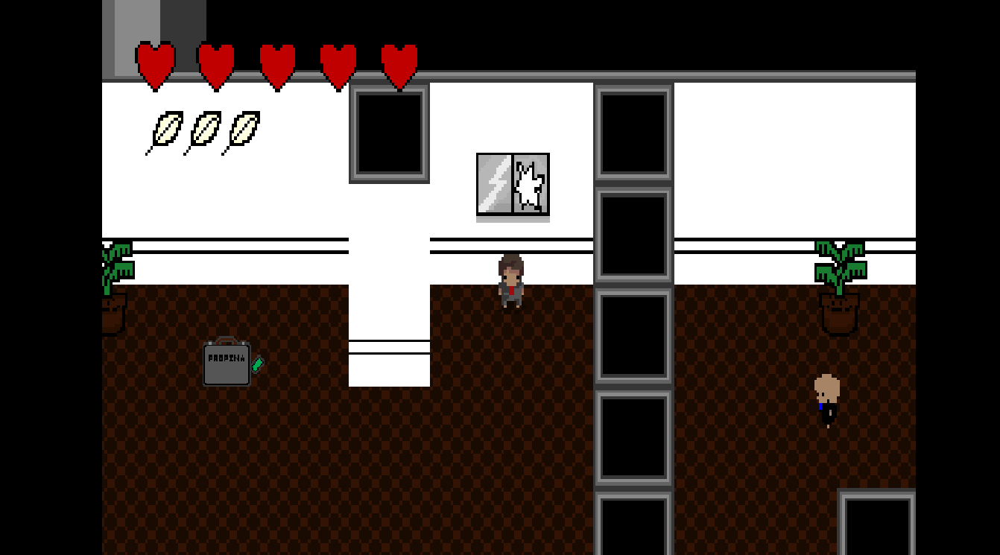

Introdução:
Bem vindos. Neste site vocês verão Tutoriais e exemplos de como criar um jogo no motor Game Maker Studio.
Motor de Jogo:
Motores de jogos são softwares focados unicamente no desenvolvimento de jogos eletrônicos para celulares, computadores e console.
Para mais informações clique aqui >>Jogos:
Utilizando o Game Maker Studio, é possível
criar vários estilos de jogos diferentes, cada um com uma
jogabilidade única, dando a você iniciante na área de
desenvolvimento de jogos, infinitas possibilidades.